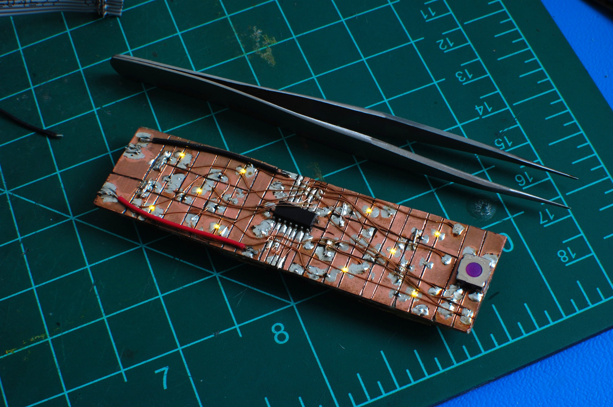

autodice
Uses fourteen 0402 LEDs, an ATtiny44A, and a few coin cells to emulate a pair of dice. I sprayed the circuit with polyurethane and it has survived a few years bouncing around in my bag.

more documentation
© copyright zach fredin, 2016